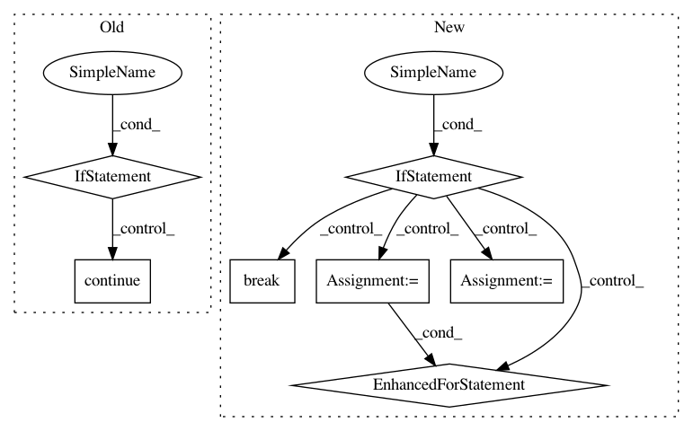

c3ca2456b96296326aa1d18f33ed72e8dd51ac5b,tensorflow_transform/analyzers.py,QuantilesCombiner,merge_accumulators,#QuantilesCombiner#Any#,1284
Before Change
graph_state = self._get_graph_state()
result = None
for summary in summaries_iterable:
if summary is None:
continue
else:
// This conversion is necessary to maintain compatibility with previous
// versions, and will be removed in future (0.15).
// TODO(b/127336397): Remove this.
if isinstance(summary, (six.binary_type, six.text_type)):
assert not summary
continue
with graph_state.lock:
if self._use_core_quantile_ops:
graph_state.thread_hostile_merge_inputs_callable(*summary)
if result is not None:
graph_state.thread_hostile_merge_inputs_callable(*result) // pylint: disable=not-an-iterable
else:
graph_state.thread_hostile_merge_inputs_callable(summary)
if result is not None:
graph_state.thread_hostile_merge_inputs_callable(result)
result = graph_state.thread_hostile_flush_summary_callable()
return result
def extract_output(self, summary):
graph_state = self._get_graph_state()
After Change
graph_state = self._get_graph_state()
while True:
batched_summaries = list(itertools.islice(summaries, 100))
if not batched_summaries:
break
with graph_state.lock:
if self._use_core_quantile_ops:
graph_state.thread_hostile_merge_summary_callable(*result)
for summary in batched_summaries:
graph_state.thread_hostile_merge_summary_callable(*summary)
else:
graph_state.thread_hostile_merge_summary_callable(result)
for summary in batched_summaries:
graph_state.thread_hostile_merge_summary_callable(summary)
result = graph_state.thread_hostile_flush_summary_callable()
return result
def extract_output(self, summary):
In pattern: SUPERPATTERN
Frequency: 3
Non-data size: 7
Instances
Project Name: tensorflow/transform
Commit Name: c3ca2456b96296326aa1d18f33ed72e8dd51ac5b
Time: 2019-09-01
Author: tf-transform-dev@google.com
File Name: tensorflow_transform/analyzers.py
Class Name: QuantilesCombiner
Method Name: merge_accumulators
Project Name: sahana/eden
Commit Name: 208e1c78399fd67ae75537489c8206943c523c52
Time: 2018-03-15
Author: dominic@nursix.org
File Name: modules/s3/s3model.py
Class Name: S3Model
Method Name: table
Project Name: jazzband/django-debug-toolbar
Commit Name: 70d3aa1b8c12d614f2ca1b1b550bb605d8c8a506
Time: 2013-11-15
Author: aymeric.augustin@m4x.org
File Name: debug_toolbar/middleware.py
Class Name: DebugToolbarMiddleware
Method Name: process_request